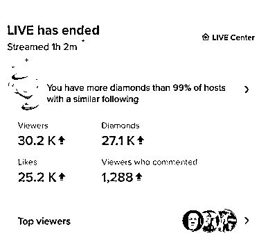

来源：https://sbu67xqbm4.feishu.cn/docx/FCiidWBeJoLOT1xreYnc9Se4nOf
这篇分享适合以下几类圈友：
1. 在做tiktok电商但是没有结果，或者长路漫漫不见尽头。
2. 入门tiktok，希望快速拿到结果。
3. 在国内做过娱乐直播，希望出海放大业务。
4. 我有社牛。
不卖关子，目前国内tiktok娱乐直播业界大火的睡播是我6月份开发（本地化到国内）的。最近有朋友告诉我，有人在卖这套方案，价格8800。就这？8800？有点实在看不下去了。遂公开，大家不要被骗，因为你可能买来也不一定赚钱。
从项目开发到目前为止，我周边朋友和各种渠道加入的直播间差不多20-30个，加上被中国人带了节奏的某些国家（比如日本拉美）的老外，也加入了进来10个左右，不过玩法都还没有突破我早期开发的样板，尽管这样，大多直播间都能小时50-100美金的数据，在线峰值最高达4万，常态在线数据数千，比起长达1.5个月回款期峰值几十数百的带货直播间，下播即时到账，一场1000粉丝，可以批量复制的娱乐直播，凭什么不值得做呢？
提醒：
1、以下一些碎碎念，时间紧的同学可以直接跳过到第2章。
2、本次分享很多是我自己的观点，欢迎讨论，不喜勿喷。
3、这篇分享的目的不是睡播，而是让更多圈友看到娱乐直播在tiktok上的价值，并不是只有苦哈哈的带货。
先上数据（200钻=1美金）。

大家好，我是Fredrich，也可以叫老杨或者阿福，我曾经是一个在电网被迫跑了5-6年亚非拉的翻译与商务小可怜，又瞎搞了5-6年直播与直播电商的互联网产品狗，现在专心做海外社媒。
我是被迫的。
2021年3月5日，因为喜欢风一般的感觉（穷）而骑电摩上班的我直接摔个后交叉韧带断裂，于是手术住院，休假，作为一名本来身背KPI的互联网加班狗就这样闲下来了，于是除了3个月痛不欲生的掰腿之外（疼痛级别，女生可以参照顺产，男生可以参照切掉丁丁的变性手术）和长达一年以上的康复锻炼之外，就剩躺尸了。
于是，我就开始干tiktok了，毕竟很有自知之明，国内任何项目对我来说竞争都不是一般的大，好在我还会英语和产品开发能力。
我的tiktok入门是圈内嘉伟老师的大航海资料，更上一步是sky老师的tiktok带货小航海，感谢生财，感谢两位老师。
这个要从我做带货直播干亏了说起。
2021年全年，在tiktok上，我全部时间都在做独立站混剪带货，直播只播了2场带货直播，GMV=0（看看，专八也就这样。）
2022年2-5月份，2个小店，几个黑哥黑姐和一个MTI刚毕业的温柔小哥哥直接让我亏的底裤都没了（好在这个学费交的挺值的，也跑出来很多玩法，太穷了，不敢追加下去），4月底升全球店也没继续直播带货了。
2022年5月份，放弃直播带货，继续短视频，开始从点大屏尝试进入娱乐直播。BTW我们这个新加坡小姐姐整体能力和素质都非常好，豪爽女汉子。
2022年6月，开发新项目，因为太穷，所以刚开始考虑的项目都是美女粉类项目（这个不要太好），因为不好招人，遂放弃。
因为会英语的主播太贵，愿意露脸的刚毕业小妹妹又很少，于是我把标准直接降到是个人，愿意动一动就行。
于是，研究了一圈，后来在Twitch上发现了睡播，简陋版的睡播在Twitch上已经有2年的历史了，在tiktok上搜竞品，全球只找到4个人在做，一个是澳大利亚的朋友（今年3月起播，现在的睡播头部第一），一个是意大利的朋友（现在已经不干了），一个印尼的老哥（技术大拿，崇拜）和一个韩国女人（5月起播，啥时候上播不知道，神出鬼没）先看他们当时的直播间，因为有3个人都是偶尔播，跟竞对真是太累了。
是不是很简陋？那么我们该怎么改？如何才能更本地化，但是又能适合老外看？我把产品狗的那套定势思维简化一下直接拿过来了，我想，大家在开发新项目的时候，不妨也从这几个方面来想一想。
一句话：恶搞之让你睡不着
可以分成2种：
静播：静播等同于静吧，安静祥和，来点噪音和环境变化，加上主播的夸张动作，就能让viewer们开心的不得了。缺点是，随着用户被教育的“越来越好”，起号就比较难了，毕竟用户没互动，你就不能动。
热播：如同闹吧，大家都知道你并不在睡觉，只是在表演，整个环境嘈杂，主播不仅可以跳起来扭，还能高歌，嫣然把床当成disco。
小朋友<15岁，单纯，一旦识破你是假睡，快速取关，并且粉转黑，付费能力有限，热爱表现，一点点引导，就可以帮你提高直播间数据，这就是“没钱就出力”。
15-25岁，年轻人，爱恶搞，手里有零花钱，18-20岁以上小年轻较为理性，即使假睡，夸张表演能给用户带来解压就好，粉了之后，一般不会脱粉，这是付费主体。
假装被吵醒之后的夸张动作，取悦用户心里的“小扭曲”。尤其适合于基督教国家。
Tiktok已经在做睡播的主播
Tiktok上在做其他娱乐直播的主播
其他社媒上在做睡播的主播
竞对的直播间是我们学习的榜样，如何让新号起号，老号稳定，如何让用户互动，用户关注，如果让用户付费，如何去学习竞对直播间的布场和动作，语言表达，控场，以及新道具的加持？这个就需要有一定运营能力才可以，否则在进入一个人少的项目还行，竞对一多，你就会被干趴下。
既然竞品少，那么只需要一点点差异化，甚至不需要差异化。
首先，国内最不缺的就是道具，最缺的就是技术能力、语言以及白皮。
在道具上，经过调研发现，就从一众的道具里面看到最酷炫的雷电云，不仅国内少，国外电商平台上几乎没有，喷雾机更是能让直播间升华到顶峰，至于泡泡机、星空灯都是之前做点大屏剩下的。
自动控制音视频的软件是我们自己开发的，老外直播间的智能硬件一时没时间开发，所以基本够用，目前所有国内的睡播直播间也还是在用我们这套软件，或者找同样开发能力的老外做的软件，都没有链接智能硬件。写到这里，有开发能力的小伙伴想到了什么呢？
如果只是照抄，可能别永远也不知道为什么要用这样那样的道具，为什么要选这样那样的礼物，为什么要做这样那样的动作。
上一张我们软件还没上线也没加道具时的测试简陋直播间，刚开始的直播间就这么简陋，然而并不耽误在线峰值飙到上万。（这个直播间和账号可能有一些做娱播的朋友早期看过，就是被泄露的那个直播间，现在广传的直播间已经不可能这么简陋了。）
两部分，直播间直播数据和新号起号数据。
单小时结算金额：上限230美金，常规均值100美金；
峰值在线人数：上限4.2万，常规范围1000-6000左右
关注人数：小时500-1000粉丝
2个阶段：
第一个阶段：基本所有新号2天起量，峰值突破500，5天突破2000；
第二个阶段：第一阶段的起号失败，新方法从1/2到1/5的概率，起量时间2-3天。
（不要猜，不要问，问就是不知道，不搞无人直播）
简单的流程就是一个人躺着睡觉，在直播间内合适的区域告诉用户打赏什么礼物，可以获得什么样的声效、光效、动作、语言以及其他影响睡眠或者用吸引用户眼球的道具来辅助用户打赏礼物。
正常来说，为节省人工，我们采用的都是程序控制所有设备，某些不能控制的设备，可以由主播自行完成，或者由一名主播或运营在镜头后人工控制。
1）直播互动系统，或者备个人去操控电脑与设备，区别是多一个人工资以及玩法是否丰富；
2）V：直播手机和互动系统需要连外网；
1）直播手机：iphone 11以上，美版优先；
2）背景设备：雷电灯或烟花灯；
3）烟雾机；
4）泡泡机；
5）星空投影灯；
6）跳舞仙人掌（可选）;
7）LED电子荧光板、电视或打印纸张/KT板背景；（选一即可）（用于告知用户礼物对应的效果）
8）音响和/或声卡：播放音效（连接电脑，播放音效）；
9）电脑：运行程序；
10）手机立式支架；
11）耳塞（霍尼韦尔）（保护听觉）、眼罩（保护视力）；（可选）
12）运营小号手机（可选）：iphone 7以上，版本不限（运营监控用）；
13）面具（可选）；
14、假发（可选）；
15、义乳（可选）。
床、枕头、被子/单、抱枕、毛绒玩具、充气锤子等效果辅助工具
1、因为我们的目的是批量复制，所以必须要短时间新号起量，所以首先要考虑的就是做号，过新手，过算法漏斗，把直播间拔高到全球范围。
2、因为要打赏，所以必须要不断刺激用户的爽点，这个就需要道具、表演能力加持了。
3、因为要数据，所以用户的平均停留时长要尽可能的拉长，提高发礼物频次（所以早期小礼物要尽可能的丰富，后面可以提高）和点赞数量，剩下的就是提高用户互动，怎么提高？又不能说话。所以主要还是在道具和动作上，越夸张用户越兴奋。也可以制造一些槽点和话题，来给用户发表个人高见，点赞、关注和分享。当然了，用户爽点已经被拔高了，再像我们早期那些动作，甚至道具，已经不起效了。好在全球流量，人多，傻子不够用啊。
作为一名做直播和直播电商的产品狗，早在15年入行开始就在跟直播线，直播的发展路径就是从语音和直播秀场发展起来的，无论是国内的映客花椒还是唱吧YY，到抖音快手，再到国外的BIGO，MICO，无一不是从娱乐起量的，或者一直坚持娱乐而搞得风风火火，大家可以去看下国内直播与语聊进军中东和东南亚老铁的分析报告，这里不赘述，而电商和广告则是直播的第二阶梯，也是平台商业化也就是平台要充分利用流量来赚钱的手段，所以，咱们来看看，为什么TIKTOK公会为什么不公开招商，为什么要全力推电商了吧？因为他要赚钱啊要占市场啊，不然流量都给你们造了啊。
回观抖音的发展路径，第一阶段就是高流量低商业化阶段，这时候要做的并不一定要跟平台的指向，而是要看清平台的现状，（当然了，现在不布局电商和广告投流，以后在tiktok上搞不好就太多饭吃）对于大部分想要在tiktok上赚到钱的小伙伴，娱乐直播是最简单也是最容易拿到结果的方向。按照抖音、映客花椒的发展路线图，初级阶段娱乐直播至少可以做2年的时间，在这段时间里面，不需要对某个项目进行深度的运营和挖掘，就可以赚到一桶金。比如，点大屏，比如睡播，现在这个直播样式充其量还只是一个草稿阶段，那么来看看这个草稿带来的收益怎么样呢？如果你有项目开发能力和复制能力，那么想一想吧！
我为什么说要有项目开发能力，因为所有的项目都会有内容同质化或者平台管控的时候，这个时候没有项目开发运营能力，就不能升级项目，不能开发新项目，结果就被淘汰。当然了，如果有资金能复制，短时间能靠堆量做一波，那也是很有钱途的，问题是你怎么知道别人在做什么新项目呢？
如果开发，只有三个办法：
5.1 多看。看尽天下电影，心中自然无马。国内的直播和国外的直播都要看，很多国内的玩法老外都不吃。
5.2 多拆解。拆多了，看到一个直播间，大体就知道怎么玩了。就像入行产品经理，你要不拆解个几百上千个APP，网站什么的，都不好意思入行。拆解需要从宏观到微观，大的点，自然是能有多盈利，小的点是，让你像素级模仿，你能不东施效颦吗？模仿的多了，自然就有方法论和创造力了。
没办法，唯手熟尔。
5.3 测试。快速测试，快速看到结果，产品方法论MVP真是让各行各业都能大放异彩啊。
主要分成2块：
第一，当然是电商，因为精力有限，现在主要还是短视频和沉淀下来的私域带货，因为回款慢，开发商品和售后繁杂，所以公域电商做得少，因为暂时不能投入太多资金，毕竟还要保证领导和娃的生活质量，所以没有投入太多，私域电商上倾斜多一些。
第二，娱乐直播。这是业务重点，包括自播和弹幕游戏直播两块，承担着直接现金流来源和私域用户沉淀与分级。有对游戏感兴趣的小伙伴，可以点我头像看下我上周发的游戏风向标。
第三，国外知识付费，刚开始，有兴趣的小伙伴，可以一起聊聊。
暂时就是这样，如果腾出来手，资金充裕点，还是想在电商上多发力。
我做过，3月份测的（那个时候还没几个人用硬改的手机做tiktok吧，Live studio还没普及，我找了很久才让硬改国内抖音的那个人给我改成适合tiktok的，不改tiktok就崩溃，我也快崩溃了，人现在大卖啊），手里还有好几台。但是我不想做了，肉眼可见的跟平台对抗很累，我又不搞知识付费，无法做到极致，加上我娱播上线，遂搁置。
无人直播可以做吗？肯定可以。可以玩多久？可以玩很久很久，取决于你的对抗能力。
如果后面有精力，可以做半无人，参照抖音。
我也做过，早期还没有人人皆知的时候跑过几个英区店（不做东南亚的原因大家都知道，利润率太低，新加坡马来到是挺好，大家都挤在那），早期其实非常想做，无奈和我没重点做电商是一个道理，一个字-穷，没资金压在路上，也不善于去谈账期，加上我评估过风险，个人抗风险能力不高，几个英区店陆续被封，就彻底断了念想。
能不能做，看自己有啥。在tiktok上带通货，你确定你能搞得过工厂，搞得过大经销商，搞得过品牌方，搞得过资本？成年人不做选择题，短期和长期一个不能少，那就干吧，最起码能快速现金流。
有模式，我称之为1+1+1，1个在盈利，1个在开发，1个在知识付费（这个我一直不好意思做，身边的朋友全是免费复制，没有一个是付费的，所以才指数级发展了很多个跟我没关系的直播间，这个脸皮薄的毛病怎么改？DDDD吧）。毕竟是免费流量，要像投流一样稳是不可能的，那么怎么做到一次又一次推流呢？就看直播运营能力了，另外同一个项目在不升级的情况下生命周期从2-6个月不等，所以在开发项目时必须要可复制，快速执行，门槛能有多高拔多高，不过也要看自己的人员配备现状。
基本配置：手机iphone 11, 2200元，电脑3000元（基本都有吧），科学上网100-2000不等，手机支架50元，音响50元，其他必备小道具500-600元，可选道具不算，床褥等等不算。
肯定行，但是不露脸，你还有啥优势，会说外语吗？会唱歌会跳舞吗？会写字画画吗？会变魔术吗？会打游戏吗？放得开去“疯”吗？敢露事业线吗？……只要有优点，尽管使出来就是。
不要太好，来，小伙伴，我们一起玩。不管在做啥，只要在镜头前不拘束，就超过了99%的人。
……
周日写了一下午了，就到这吧。
PS：
我是Fredrich杨永，外贸跨境业务15年，目前和顾小北老师与黄小刀出版了第一本 AI 跨境电商新书《人人都能玩赚跨境电商 AI 实战宝典 跨境一本通》，亦仁老师作序
我们将做 AI 跨境电商的深度探索与落地，有感兴趣的圈友，可以加我微信